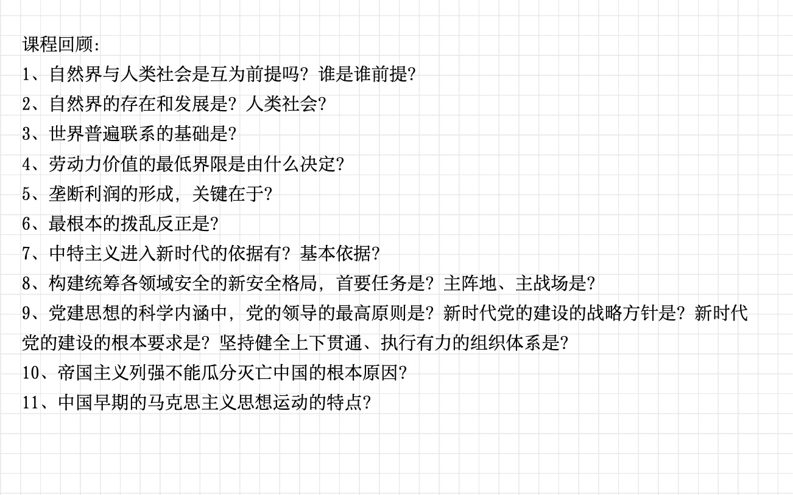
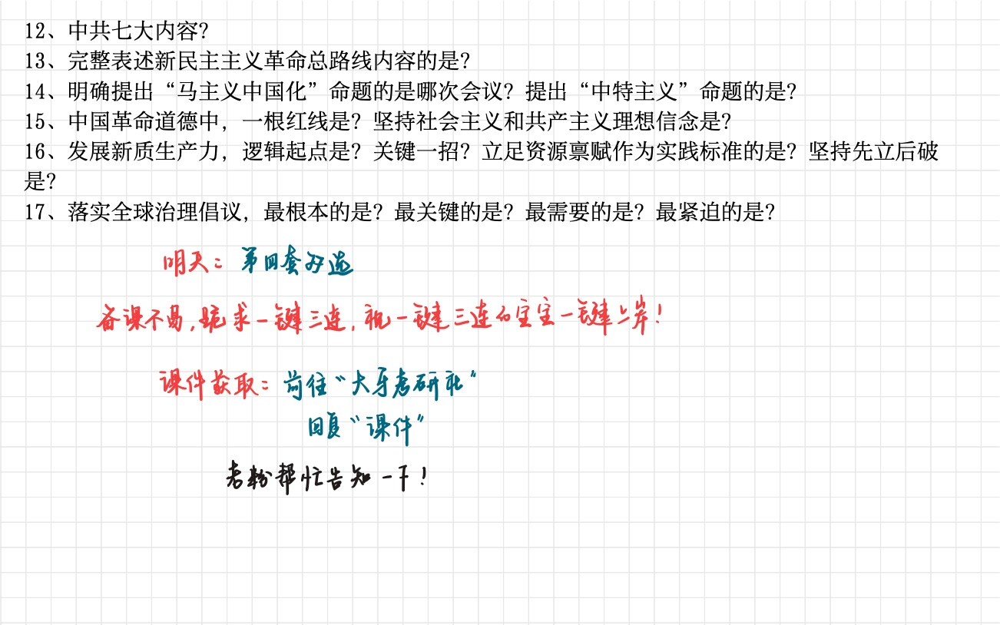

1、自然界与人类社会是互前提吗？谁是谁前提？
不是互为前提。自然界是人类社会形成的前提，是构成人类社会客观现实性的自然基础；人类社会是自然界长期发展的产物，又反作用于自然界。实践是自然界与人类社会分化又统一的基础。
2、自然界的存在和发展是？人类社会？
自然界的存在和发展是客观的、自在的，不以人的意志为转移；人类社会的存在和发展也是客观的，但它是人有意识有目的的活动的结果，是一个自然历史过程，由生产力与生产关系的矛盾运动决定。
3、世界普遍联系的基础是？
物质（世界的物质统一性）。世界统一于物质，联系是事物本身固有的、客观的联系；联系通过中介实现，实践是人与自然、人与社会统一的基础。
4、劳动力价值的最低界限是由什么决定？
由劳动者维持自身生存所必需的生活资料的价值决定（生理需要的最低限度）。劳动力价值还包括维持劳动者家属生存、劳动者接受教育训练的费用，并包含历史和道德的因素。
5、垄断利润的形成，关键在于？
关键在于垄断组织凭借垄断地位规定垄断价格（高价出售、低价购买），获取超过平均利润的高额利润。垄断利润的来源仍是雇佣工人创造的剩余价值以及其他企业、小生产者创造的部分价值，垄断价格本身不创造价值。
6、最根本的拨乱反正是？
重新确立党的实事求是的思想路线。思想路线的拨乱反正是最根本的拨乱反正；在此基础上，十一届三中全会作出把党和国家工作中心转移到经济建设上来、实行改革开放的历史性决策。
7、中特主义进入新时代的依据有？基本依据？
依据：党的十八大以来党和国家事业取得历史性成就、发生历史性变革（实践依据）；我国社会主要矛盾发生转化（基本依据）；我国发展站到新的历史起点上。基本依据是我国社会主要矛盾的变化，即人民日益增长的美好生活需要和不平衡不充分的发展之间的矛盾。
8、构建统筹各领域安全的新安全格局，首要任务是？主阵地、主战场是？
首要任务是维护政治安全（政治安全是国家安全的根本，核心是政权安全、制度安全）。主阵地、主战场是意识形态领域，特别是互联网（网络空间），要牢牢掌握意识形态工作领导权和网络意识形态工作主动权。
9、党建思想的科学内涵中，党的领导的最高原则是？新时代党的建设的战略方针是？新时代党的建设的根本要求是？坚持健全上下贯通、执行有力的组织体系是？
党的领导的最高原则是党中央集中统一领导（坚持党中央权威和集中统一领导）。新时代党的建设的战略方针是坚持党要管党、全面从严治党。新时代党的建设的根本要求是坚持和加强党的全面领导，以党的政治建设为统领、把党的政治建设摆在首位。健全上下贯通、执行有力的组织体系，是严密党的组织体系的重点，是党的优势所在、力量所在。
10、帝国主义列强不能瓜分灭亡中国的根本原因？
根本原因是中华民族不屈不挠的反侵略斗争（中国人民的顽强反抗）。帝国主义列强之间的矛盾和相互制约也是重要原因，但不起根本作用。
11、中国早期的马克思主义思想运动的特点？
①重视对马克思主义基本理论的学习，明确同第二国际的社会民主主义划清界限；②注意从中国实际出发，学习、运用马克思主义理论；③开始提出知识分子应当同劳动群众相结合的思想，主张“到民间去”，推动马克思主义与工人运动相结合。
12、中共七大内容？
①制定党的政治路线：放手发动群众，壮大人民力量，在我党的领导下，打败日本侵略者，解放全国人民，建立一个新民主主义的中国；②把毛泽东思想确立为党的指导思想并写入党章；③总结并阐述党的三大优良作风（理论和实践相结合、和人民群众紧密联系在一起、批评和自我批评）；④选举产生新的中央委员会，毛泽东任中央委员会主席。
13、完整表述新民主主义革命总路线内容的是？
1948年4月毛泽东《在晋绥干部会议上的讲话》。总路线：无产阶级领导的，人民大众的，反对帝国主义、封建主义和官僚资本主义的革命。
14、明确提出“马主义中国化”命题的是哪次会议？提出“中特主义”命题的是？
“马克思主义中国化”命题：1938年10月党的六届六中全会（毛泽东作《论新阶段》报告）。“中国特色社会主义”命题：1982年党的十二大（邓小平开幕词提出“走自己的道路，建设有中国特色的社会主义”）。
15、中国革命道德中，一根红线是？坚持社会主义和共产主义理想信念是？
一根红线是全心全意为人民服务。坚持社会主义和共产主义理想信念是中国革命道德的灵魂（核心），是革命道德先进性的根本体现，是共产党人的精神支柱。
16、发展新质生产力，逻辑起点是？关键一招？立足资源禀赋作为实践标准的是？坚持先立后破是？
逻辑起点是科技创新（科技创新是发展新质生产力的核心要素）；关键一招是改革开放（决定当代中国命运的关键一招）；立足资源禀赋、作为实践标准的是因地制宜（从本地资源禀赋、产业基础、科研条件出发，有选择地发展新产业新模式新动能）；坚持先立后破是重要方法论（先立起新动能，再逐步退出旧动能，不能把手里吃饭的家伙先扔了）。
17、落实全球治理倡议，最根本的是？最关键的是？最需要的是？最紧迫的是？明天：弟回套好选备课不易，晚求一键三连，祝一键三達的宜宝一链上岸！课件获取：前往、大牙意研祕〞回复〝课伴〞老粉帮忙告知一干！
最根本的是坚持主权平等；最关键的是坚持国际法治；最需要的是坚持多边主义；最紧迫的是坚持力求实效（坚持以人为本，把发展置于国际议程优先位置，增强发展中国家代表性和发言权）。
课程回顾原图

